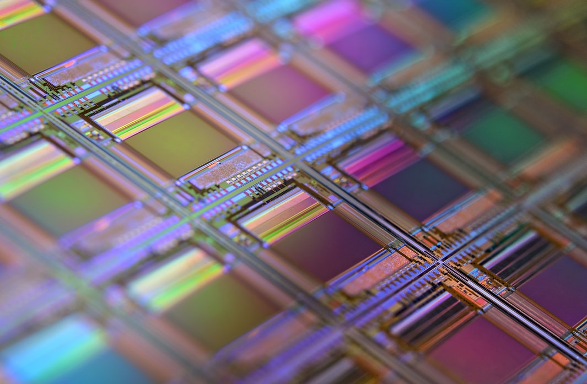

Super CMOS
Super CMOS Technical Summary By ASST
learn more!
Super CMOS Technical Summary By ASST
learn more!
Technical Summary
In various embodiments, Schottky-CMOS (also referred to herein as “Super CMOS” and SCMOSTM) technology is employed to build circuit blocks using Schottky Barrier diodes (SBDs), such as the low threshold Schottky Barrier Diodes (LtSBDTMs), thereby addressing an increasing demand for higher semiconductor efficiency and upcoming physical limits on CMOS transistor dimensions, and faster speed, lower power consumption, and lower cost manufacturing.
Engineering Info
In some dynamic logic embodiments, IC chips implement a complex structured SCMOS™ NAND gate sub-systems. The IC includes a first input coupled to a cathode of a first P-type Schottky diode and (x-1) additional inputs coupled to the respective cathodes of additional P-type Schottky diodes. The diode tree with common anode (IG) is followed by an CMOS INVERTER with Feedback inverter to the IG node. An single phase up going pulse clock (SCK) is applied a P-type transistor to precharge the IG node to VDD. Normally, the x inputs are at Hi-level or floating, the output YN node is down. During the pulse window, the YN is Down only if all x inputs are at VDD. Notice that all SBDs have Zero leakage at static state, and only the small transistors has pA leakage current flow between the source and drain
More Technical Info...
In another dynamic logic embodiments, IC chips implement a complex structured SCMOS™ NOR gate sub-systems. The IC includes a first input coupled to an anode of a first N-type Schottky diode and x-1 additional inputs coupled to the respective anodes of additional N-type Schottky diodes. The diode tree with common cathode (IG) is followed by an CMOS INVERTER with Feedback inverter to the IG node. An single phase down going pulse clock (SCKN) is applied a N-type transistor to precharge the IG node to VSS. Normally, the x inputs are at VSS-level or floating, the output YN node is at VDD. During the pulse window, the YN is at VDD only if all x inputs are at VSS.
Digital Memory/Storage Blocks
We are offering many other digital Memory and NV Storage blocks in the SCMOS2™ ALMS design kits besides the Dynamic Logic gates for decision making MultiThread Processors, Memory, and NV Storage units. Our disruptive smart chip set solutions, can be implemented with simplified network by a super low cost Si Chip manufacturing lines which have less than 1/3 equipment and facility costs of a CMOS FINFET line, and have even better(16-160X) Performance/Speed, Power and chip Area saving, Yield, and Reliability (PPAYR) advantages.